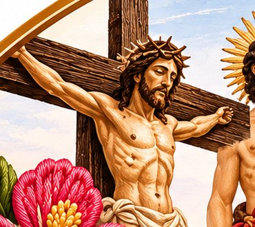
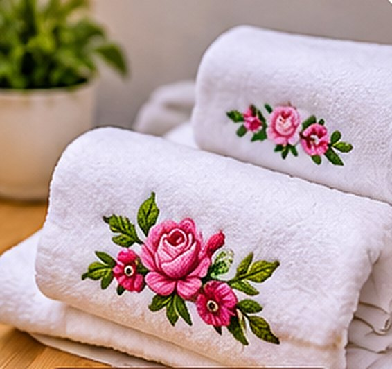
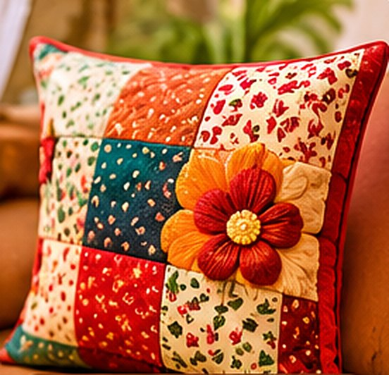
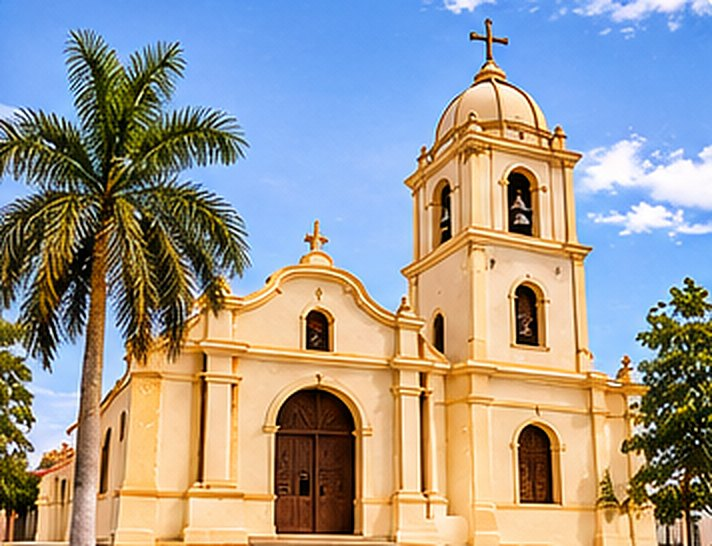
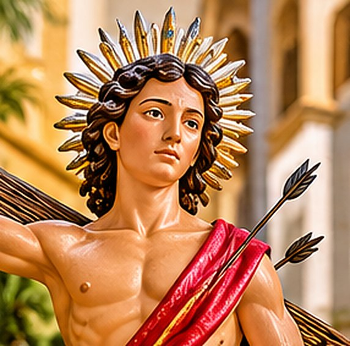
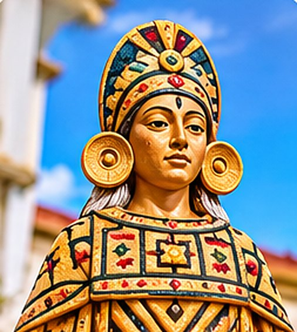
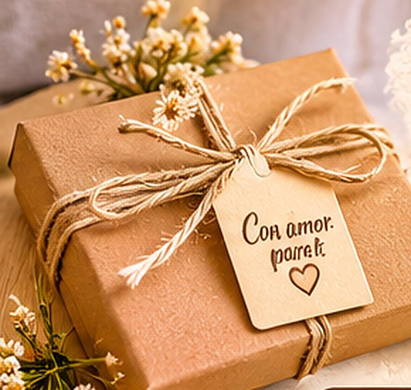

Fe y tradición
Vía Crucis de Chepén
Una expresión de fe que reunimos en cuadros y llaveros, para llevar con respeto y devoción un recuerdo de nuestra tradición.
Chepén · La Libertad · Perú
Creamos piezas únicas que unen el arte artesanal con la identidad cultural de Chepén. Cada bordado, cuadro, llavero y detalle es elaborado con dedicación, cariño y el orgullo de nuestras raíces.
“Un pedacito de nuestra tierra, hecho con amor.”



Imagen referencialNuestra esencia
Somos un emprendimiento familiar que transforma la creatividad y el trabajo hecho a mano en piezas llenas de significado. Nos inspira nuestra querida tierra, sus tradiciones, su historia y las expresiones culturales que forman parte de nuestra identidad. A través de nuestras creaciones buscamos conservar recuerdos, compartir nuestras costumbres y llevar un pedacito de Chepén a cada hogar.
Colecciones
Elige una colección y consulta por WhatsApp la pieza que te guste. Si no ves lo que buscas, también hacemos pedidos personalizados.
Las imágenes mostradas son referenciales. Pronto las reemplazaremos por fotografías de nuestras propias piezas.
Nuestra querida tierra
Nuestras creaciones nacen del cariño por Chepén: su fe, sus imágenes, su gente y los símbolos que nos recuerdan de dónde venimos. Cada pieza es una manera de honrar esa herencia y compartirla con quienes la llevan en el corazón.

Fe y tradición
Una expresión de fe que reunimos en cuadros y llaveros, para llevar con respeto y devoción un recuerdo de nuestra tradición.

Devoción que nos une
Patrón de la iglesia de Chepén. Lo recordamos en piezas hechas a mano que acompañan la devoción de las familias.

Historia y legado
Un símbolo de la identidad histórica de la región que nos inspira a crear arte con respeto por nuestro legado.
“Cada pieza guarda una historia. Cada historia nos recuerda de dónde venimos.”
Galería
Toca una imagen para ampliarla. Puedes navegar con las flechas del teclado.
Fotografías referenciales de ejemplo.

Pedidos personalizados
Un cuadro para decorar tu hogar, un llavero que te recuerde de dónde vienes o una creación especial para alguien que amas. También elaboramos pedidos personalizados para que cada regalo sea único y especial.
Cuéntanos tu idea. Nosotros la convertimos en arte.
Cuéntanos tu idea por WhatsAppCrear productos artesanales hechos a mano que transmitan calidad, belleza y tradición, ofreciendo piezas únicas elaboradas con detalle y cariño, que reflejen nuestra identidad y dedicación por el arte textil y decorativo.
Ser una marca artesanal reconocida por su calidad, innovación y calidez humana, manteniendo viva la tradición y evolucionando con nuevas técnicas y diseños.
Contacto
Escríbenos por WhatsApp y cuéntanos qué te gustaría. Con gusto te orientamos.
WhatsApp 949 722 356Chepén, La Libertad – Perú
Síguenos